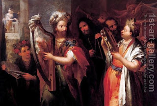

Brachot 4 - The Morning of King David
The duration of night watches is derived from King David's words, "At midnight I will rise to give You thanks." Since David also said, "My eyes preceded the watches," we see that there are still two watches left at midnight. However, David's real schedule was as follows: during the first part of the night he would sleep like a horse, whose sleep is always light - that is, he would study Torah with occasional catnaps, and since midnight he arose strong as a lion, to sing praises. For that, David had a harp near his bed, and at midnight the northern wind would come and play on it, to wake him up.
David praised himself, "Guard my soul, for I am devout." He meant, "All the kings of East and West sleep until three hours into the day, but I arise at midnight, to give thanks to You." Some say, he meant, "All kings sit with honorable advisors, and my hands are soiled with blood, looking at the niddah stains, embryos, and afterbirths, to declare a woman pure for her husband. Not only that, but I will agree if my decision is incorrect."
The Sages required saying the Shema before midnight . Why? This is later than people going to bed, but earlier than the sleep ends! - They wanted to distance a man from an error, lest he comes home and decides to eat a little and sleep a little, and then miss the evening Shema, and anybody who transgresses the words of the Sages deserves to be bitten by a snake. Why suddenly so strong a statement? Because of the danger of sleep.
Art: Andrea Celesti - King David Playing the Zither